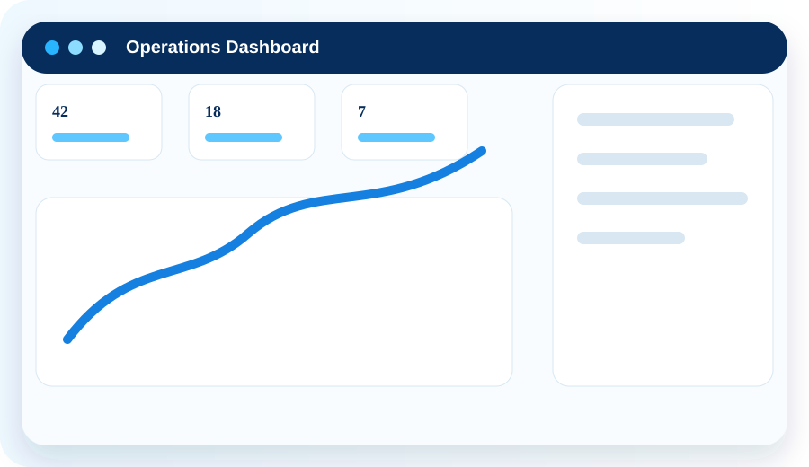
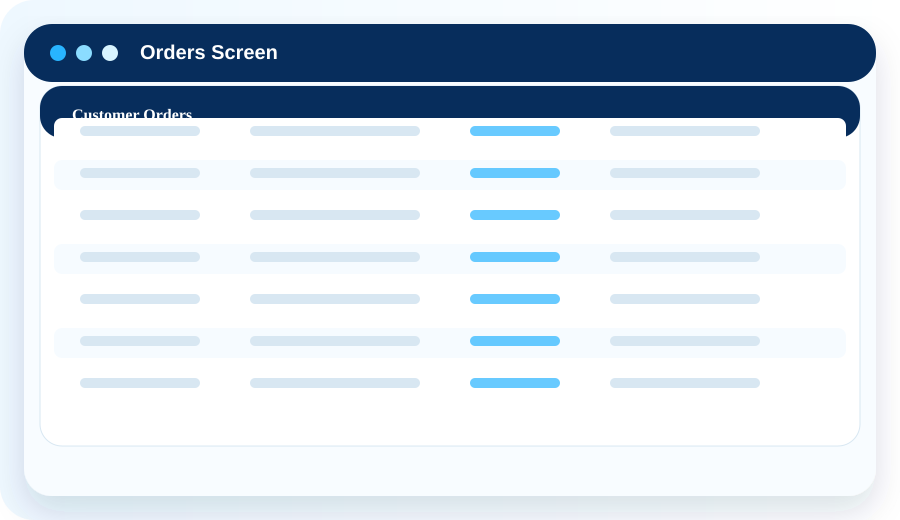
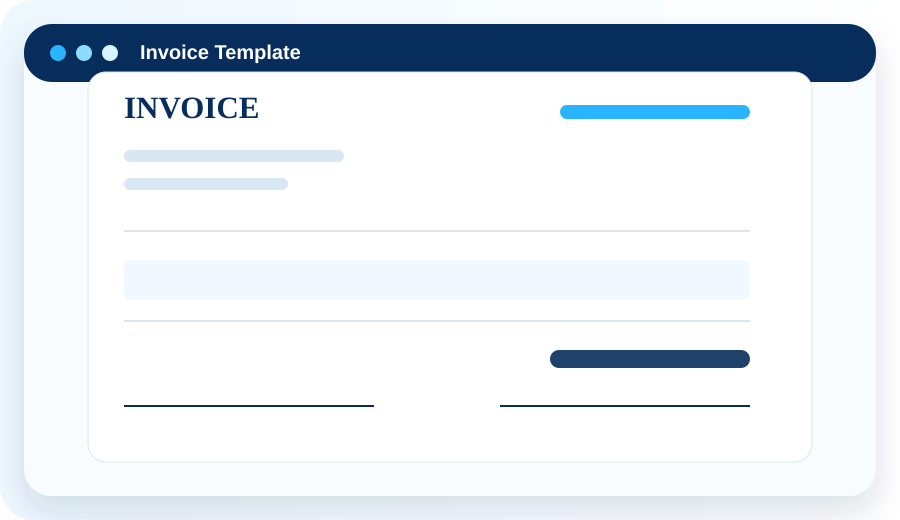

Stop guessing. Start managing your daily operations.
Daily Ops Report Bot helps small businesses track inventory, manage orders, assign employee work, print invoices, scan barcodes, create purchase orders, review audit history, and protect business data.

One system for the work small businesses do every day.
Move away from disconnected spreadsheets, paper notes, and memory. Give owners, managers, and employees a clearer way to manage daily operations.
Inventory control
Track quantities, product photos, categories, filters, stock locations, item variants, and low-stock status.
Order management
Create customer orders, assign work, deduct the correct inventory variant, and print professional invoices.
Business-ready tools
Use barcodes, purchase orders, audit trails, setup guidance, backup and restore, and package-based access.
Inventory and operations without the enterprise headache.
Daily Ops Report Bot is for businesses that keep regular stock on hand and need practical control over what they have, what they sell, what they use, and what needs to be reordered.
Questions it helps answer
See the app in action.
Use these placeholder images until you add real screenshots from your Daily Ops Report Bot application.

OrdersCustomer details, line items, assignment, completion.
InvoicesBusiness branding, totals, signatures, print details.Ready to organize your inventory and daily workflow?
Download access is protected by a download code. Provide codes to customers, demo users, or pilot businesses.